마을 정보
리프레
리프레 · 리프레마을NPC 20명근처 사냥터 48곳
마을 NPC 20명
- 촌장 타타모
- 메이플 운영자
- 스피넬
- 카산드라
- 가가
- 위험지역 총알택시
- 기부함
- 달리어
- 요원 E
- 루니
- 명예로운 바위
- 코코
- 쿠커스
- 차원의 거울
- 코스쿠
- 무디
- 모스
- 맥스
- 떠돌이 연금술사
- 듀이
근처 사냥터 48곳 · 레벨 낮은 순
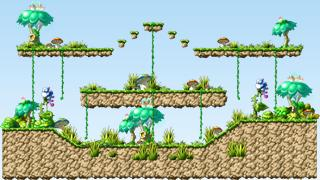
리프레 서쪽 숲Lv.70~74 · 몬스터 2종 미나르숲 서쪽 경계Lv.70~76 · 몬스터 4종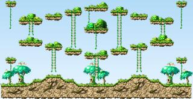
털복숭이의 숲Lv.70~74 · 몬스터 2종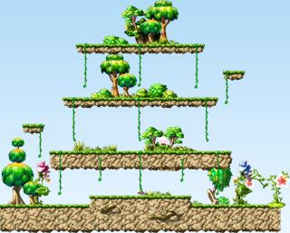
리프레 동쪽 숲Lv.72 · 몬스터 1종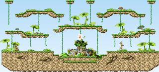
심술쟁이의 숲Lv.72~78 · 몬스터 2종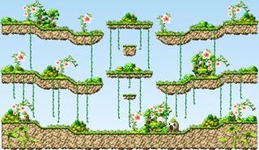
투구벌레의 숲Lv.72~76 · 몬스터 2종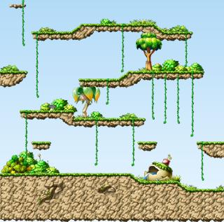
가파른 언덕Lv.76~78 · 몬스터 2종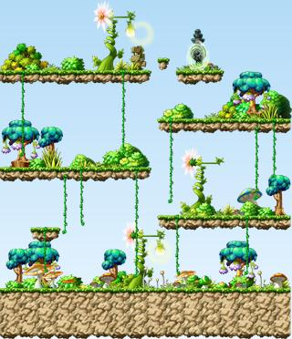
미나르숲 동쪽 경계Lv.76 · 몬스터 1종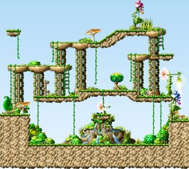
하늘 둥지 입구Lv.80~85 · 몬스터 2종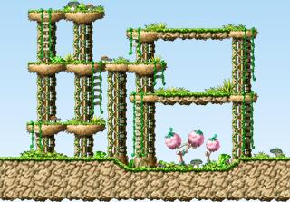
하늘 둥지1Lv.80~83 · 몬스터 2종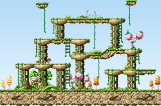
하늘 둥지2Lv.80~83 · 몬스터 2종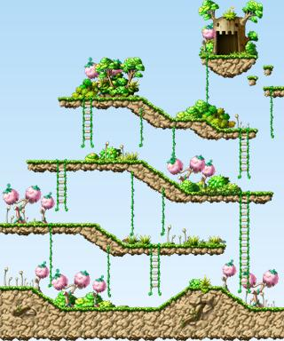
산양의 골짜기1Lv.85~88 · 몬스터 2종 숲의 갈림길Lv.85~88 · 몬스터 2종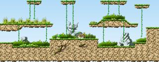
검은 켄타우로스의 영역Lv.88 · 몬스터 1종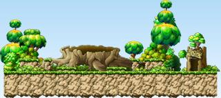
그리프의 숲Lv.88~105 · 몬스터 3종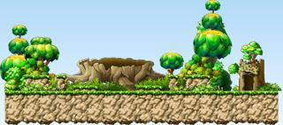
그리프의 숲Lv.88~105 · 몬스터 3종 마뇽의 숲Lv.88~105 · 몬스터 2종 마뇽의 숲Lv.88~105 · 몬스터 2종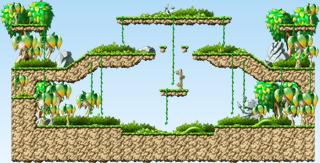
물과 어둠의 전장Lv.88 · 몬스터 2종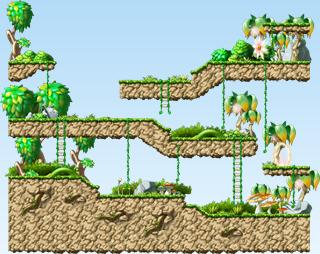
불과 물의 전장Lv.88 · 몬스터 2종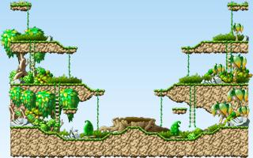
불과 어둠의 전장Lv.88 · 몬스터 2종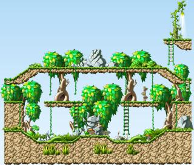
붉은 켄타우로스의 영역Lv.88 · 몬스터 1종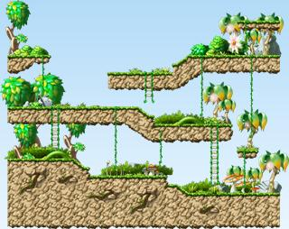
켄타우로스의 원탁Lv.88 · 몬스터 3종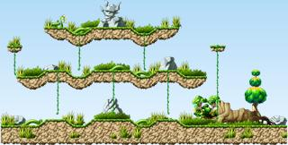
푸른 켄타우로스의 영역Lv.88 · 몬스터 1종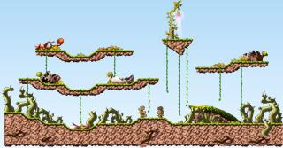
용의 숲 입구Lv.90~93 · 몬스터 2종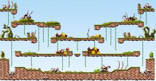
용의 숲1Lv.90~105 · 몬스터 4종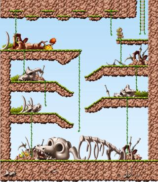
숨겨진 용의 무덤1Lv.93~100 · 몬스터 2종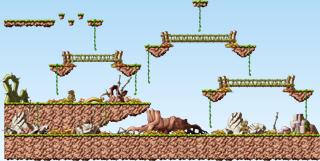
용의 숲2Lv.95~100 · 몬스터 2종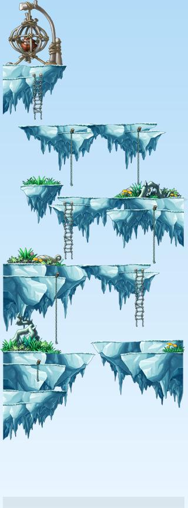
레드 와이번의 둥지Lv.97 · 몬스터 1종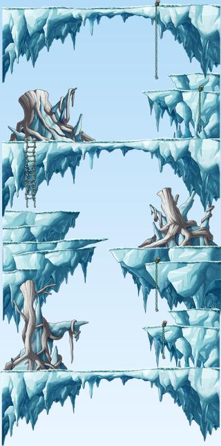
레비아탄의 협곡Lv.97~103 · 몬스터 3종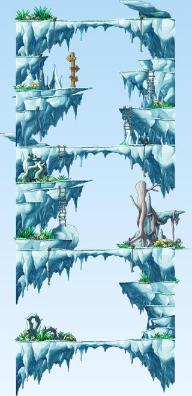
와이번의 협곡Lv.97~103 · 몬스터 3종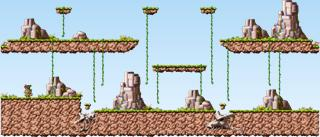
용의 숲3Lv.97~105 · 몬스터 2종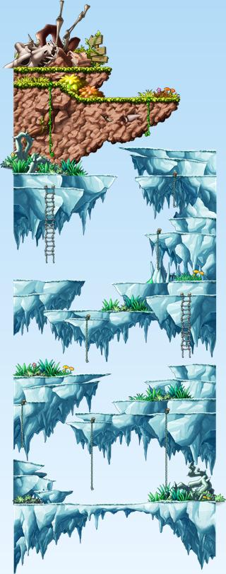
용의 협곡Lv.97~101 · 몬스터 2종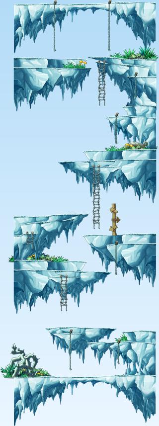
협곡의 갈림길Lv.97~101 · 몬스터 2종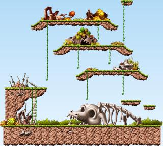
불타는 숲Lv.100~105 · 몬스터 2종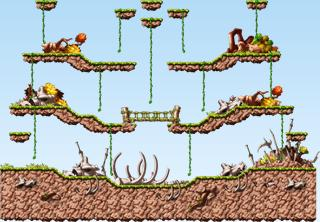
사라진 숲Lv.100~105 · 몬스터 2종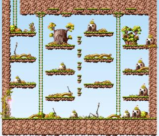
숨겨진 용의 무덤2Lv.100~105 · 몬스터 2종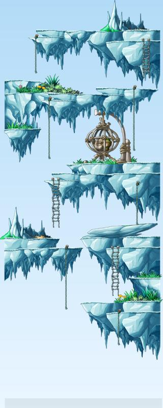
블루 와이번의 둥지Lv.101 · 몬스터 1종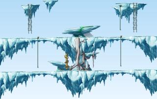
용의 둥지 입구Lv.103 · 몬스터 1종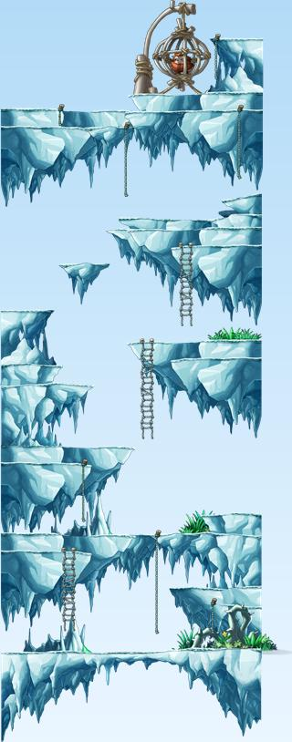
협곡의 동쪽길Lv.103 · 몬스터 1종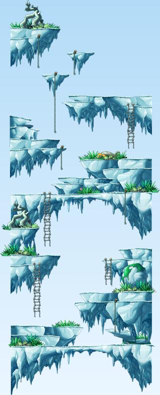
협곡의 서쪽길Lv.103 · 몬스터 1종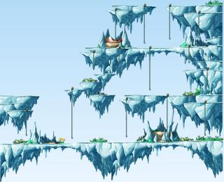
뉴트보호구역Lv.105 · 몬스터 1종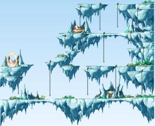
망가진 용의 둥지Lv.105 · 몬스터 1종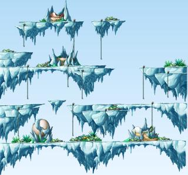
위험한 용의 둥지Lv.105~110 · 몬스터 2종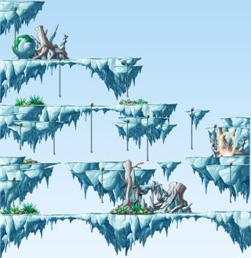
남겨진 용의 둥지1Lv.110~113 · 몬스터 2종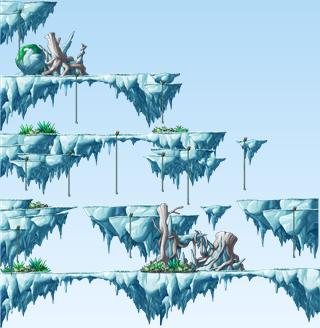
부활하는 기억Lv.110~113 · 몬스터 2종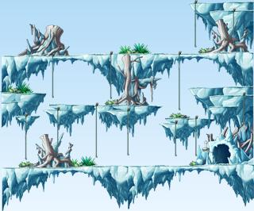
죽은 용의 둥지Lv.110~113 · 몬스터 2종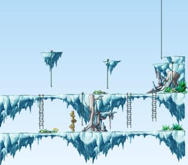
큰 둥지 봉우리Lv.110~113 · 몬스터 2종마을 목록과 이름은 메랜인포 기준, NPC와 맵 그림은 원본 게임 데이터(GMS 83) 기준이에요. 메이플랜드에서는 다를 수 있어요.